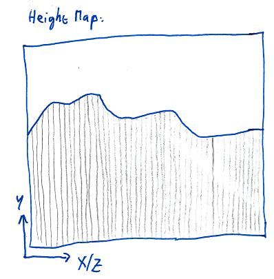
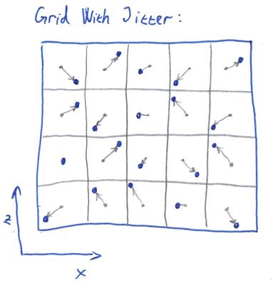
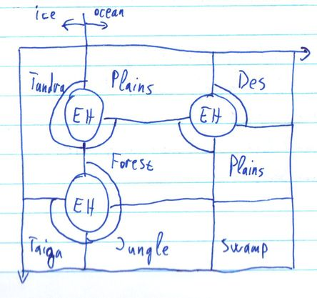
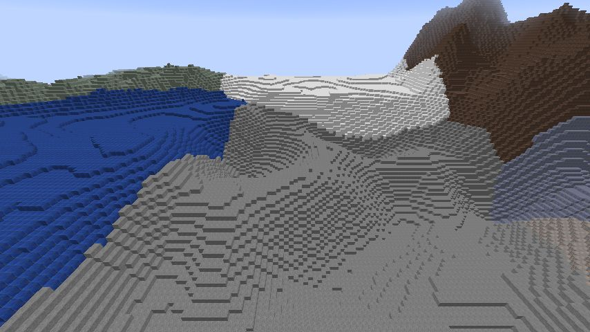

This article explains the principles behind the terrain generator in Cuberite. It is not strictly specific to Cuberite, though, it can be viewed as a generic guide to various terrain-generating algorithms, with specific implementation notes regarding Cuberite.
Contents:
The nature has many complicated geological, physical and biological processes working on all scales from microscopic to planet-wide scale, that have shaped the terrain into what we see today. The tectonic plates collide, push mountain ranges up and ocean trenches down. Erosion dulls the sharp shapes. Plantlife takes over to further change the overall look of the world.
Generally speaking, the processes take what's there and change it. Unlike computer generating, which usually creates a finished terrain from scratch, or maybe with only a few iterations. It would be unfeasible for software to emulate all the natural processes in enough detail to provide world generation for a game, mainly because in the nature everything interacts with everything. If a mountain range rises, it changes the way that the precipitation is carried by the wind to the lands beyond the mountains, thus changing the erosion rate there and the vegetation type.
For a MineCraft-like game terrain generator we need the generator to have several properties:
As already mentioned, the nature works basically by generating raw terrain composition, then "applying" erosion, vegetation and finally this leads to biomes being formed. Let's now try a somewhat inverse approach: First generate biomes, then fit them with appropriate terrain, and finally cover in vegetation and all the other stuff.
Splitting the parts like this suddenly makes it possible to create a generator with the required properties. We can generate a reasonable biome map chunk-wise, independently of all the other data. Once we have the biomes, we can compose the terrain for the chunk by using the biome data for the chunk, and possibly even for neighboring chunks. Note that we're not breaking the first property, the biomes can be generated separately so a neighboring chunk's biome map can be generated without the need for the entire neighboring chunk to be present. Similarly, once we have the terrain composition for a chunk, we can generate all the vegetation and structures in it, and those can again use the terrain composition in neighboring chunks.
This leads us directly to the main pipeline that is used for generating terrain in Cuberite. For technical reasons, the terrain composition step is further subdivided into Height generation and Composition generation, and the structures are really called Finishers. For each chunk the generator generates, in this sequence:


The beautiful thing about this is that the individual components can be changed independently. You can have 5 biome generators and 3 height generators and you can let the users mix'n'match.
This pipeline had been used in Cuberite for about a year, before we realized that is has a flaw: There is no way for it to generate overhangs. We tried to implement a Finisher that would actually carve overhangs into the terrain; this approach has several problems, most severe one of those is that tree and village generation becomes unbelievably difficult - those finishers need to know the basic terrain composition of the neighboring chunks in order to generate, and the composition would be different after the overhangs are carved. So we need to come up with a better way, something that directly generates the overhangs at latest by the Terrain composition stage.
Luckily we have just the thing. Instead of generating a 2D heightmap, we generate a 3D "density map" - we decide about each block in the chunk being generated, whether it is a solid block or an air block. The following pictures try to illustrate this in one less dimension - the heightmap is a 1D function and the density map is a 2D function:
This way we can have generators that produce overhangs and yet allow finishers that need the entire composition of the neighboring chunks. However, we pay the price for this in performance, because a 3D noise for the density map needs order of magnitude more CPU cycles than 2D noise for heightmap. Also the RAM usage is increased because instead of storing 16 * 16 height values we need to store 16 * 256 * 16 density values.
For a great tutorial on coherent noise, see the LibNoise documentation.
Coherent noise is a type of noise that has three important properties that we can use to our advantage:
We'll be mostly using Perlin noise in this article. It is the easiest one to visualise and use and is one of the most useful kinds of coherent noises. Here's an example of a Perlin noise generated in 2 dimensions:
It comes only naturally that such a 2D noise can be used as a terrain height map directly:

However, this is not the only use for this noise, and 2 dimensions is not the limit - this noise can be generated for any number of dimensions.
The easiest way to generate biomes is to not generate them at all - simply assign a single constant biome to everywhere. And indeed there are times when this kind of "generator" is useful - for the MineCraft's Flat world type, or for testing purposes, or for tematic maps. In Cuberite, this is exactly what the Constant biome generator does.
Of course, there are more interesting test scenarios for which multiple biomes must be generated as easy as possible. For these special needs, there's a CheckerBoard biome generator. As the name suggests, it generates a grid of alternating biomes.
Those two generators were more of a technicality, we need to make something more interesting if we're going for a natural look. The Voronoi generator is the first step towards such a change. Recall that a Voronoi diagram is a construct that creates a set of areas where each point in an area is closer to the appropriate seed of the area than the seeds of any other area:

To generate biomes using this approach, you select random "seeds", assign a biome to each one, and then for each "column" of the world you find the seed that is the nearest to that column, and use that seed's biome.
The overall shape of a Voronoi diagram is governed by the placement of the seeds. In extreme cases, a seed could affect the entire diagram, which is what we don't want - we need our locality, so that we can generate a chunk's worth of biome data. We also don't want the too much irregular diagrams that are produced when the seeds are in small clusters. We need our seeds to come in random, yet somewhat uniform fashion.
Luckily, we have just the tool: Grid with jitter. Originally used in antialiasing techniques, they can be successfully applied as a source of the seeds for a Voronoi diagram. Simply take a regular 2D grid of seeds with the grid distance being N, and move each seed along the X and Y axis by a random distance, usually in the range [-N / 2, +N / 2]:
Such a grid is the ideal seed source for a Voronoi biome generator, because not only are the Voronoi cells "reasonable", but the seed placement's effect on the diagram is localized - each pixel in the diagram depends on at most 4 x 4 seeds around it. In the following picture, the seed for the requested point (blue) must be within the indicated circle. Even the second-nearest seed, which we will need later, is inside that circle.
Calculating the jitter for each cell can be done easily by using a 2D Perlin noise for each coord. We calculate the noise's value at [X, Z], which gives us a number in the range [-1; 1]. We then multiply the number by N / 2, this gives us the required range of [-N / 2, +N / 2]. Adding this number to the X coord gives us the seed's X position. We use another Perlin noise and the same calculation for the Z coord of the seed.
Here's an example of a biome map generated using the Voronoi + jitter grid, as implemented by the Voronoi biome generator in Cuberite:
The biomes are starting to look interesting, but now they have straight-line borders, which looks rather weird and the players will most likely notice very soon. We need to somehow distort the borders to make them look more natural. By far the easiest way to achieve that is to use a little trick: When the generator is asked for the biome at column [X, Z], instead of calculating the Voronoi biome for column [X, Z], we first calculate a random offset for each coord, and add it to the coordinates. So the generator actually responds with the biome for [X + rndX, Z + rndZ].
In order to keep the property that generating for the second time gives us the same result, we need the "random offset" to be replicatable - same output for the same input. This is where we use yet another Perlin noise - just like with the jitter for the Voronoi grid, we add a value from a separate noise to each coordinate before sending the coordinates down to the Voronoi generator:
DistortedVoronoiBiome(X, Z) := VoronoiBiome(X + PerlinX(X, Z), Z + PerlinZ(X, Z))
The following image shows the effects of the change, as generated by Cuberite's DistortedVoronoi biome generator. It is actually using the very same Voronoi map as the previous image, the only change has been the addition of the distortion:
As you can see, this already looks reasonable enough, it could be considered natural biomes, if it weren't for several drawbacks:
Our next goal is to remove the first defect of the distorted Voronoi generator: unrelated biomes generating next to each other. You are highly unlikely to find a jungle biome next to a desert biome in the real world, so we want to have as few of those borders as possible in our generator, too. We could further improve on the selection of biome-to-seed in the Voronoi generator. Or we can try a completely different idea altogether.
Recall how we talked about the nature, where the biomes are formed by the specific conditions of a place. What if we could make a similar dependency, but without the terrain? It turns out this is possible rather easily - instead of depending on the terrain, we choose two completely artificial measures. Let's call them Temperature and Humidity. If we knew the temperature of the place, we know what set of biomes are possible for such temperatures - we won't place deserts in the cold and tundra in the hot anymore. Similarly, the humidity will help us sort out the desert vs jungle issue. But how do we get a temperature and humidity? Once again, the Perlin noise comes to the rescue. We can use a simple 2D Perlin noise as the temperature map, and another one as the humidity map.
What we need next is a decision of what biome to generate in certain temperature and humidity combinations. The fastest way for a computer is to have a 2D array, where the temperature is one dimension and humidity the other, and the values in the array specify the biome to generate:
We can even "misuse" the above diagram to include the hill variants of the biomes and have those hills neighbor each other properly, simply by declaring some of the decision diagram's parts as hills:
The problem with this approach is that there are biomes that should not depend on temperature or humidity, they generate across all of their values. Biomes like Oceans, Rivers and Mushroom. We could either add them somewhere into the decision diagram, or we can make the generator use a multi-step decision:
This is the approach implemented in Cuberite's MultiStepMap biome generator. It generates biome maps like this:
To decide whether the point is in the ocean, land or mushroom, the generator first chooses seeds in a grid that will be later fed to a DistortedVoronoi algorithm, the seeds get the "ocean" and "land" values. Then it considers all the "ocean" seeds that are surrounded by 8 other "ocean" seeds and turns a random few of them into "mushroom". This special seed processing makes the mushroom biomes mostly surrounded by ocean. The following image shows an example seeds grid that the generator might consider, only the two framed cells are allowed to change into mushroom. L = land, O = ocean:

Next, the generator calculates the DistortedVoronoi for the seeds. For the areas that are calculated as mushroom, the distance to the nearest-seed is used to further shrink the mushroom biome and then to distinguish between mushroom and mushroom-shore (image depicts a Voronoi cell for illustration purposes, it works similarly with DistortedVoronoi). O = ocean, M = mushroom, MS = mushroom shore:

The rivers are added only to the areas that have been previously marked as land. A simple 2D Perlin noise is used as the base, where its value is between 0 and a configured threshold value, a river is created. This creates the rivers in a closed-loop-like shapes, occasionally splitting two branches off:

For the leftover land biomes, the two Perlin noises, representing temperature and humidity, are used to generate the biomes, as described earlier. Additionally, the temperature map is used to turn the Ocean biome into FrozenOcean, and the River biome into FrozenRiver, wherever the temperature drops below a threshold.
The 1.7 MineCraft update brought a completely new terrain generation, which has sparked renewed interest in the biome generation. A new, potentially simpler way of generating biomes was found, the two-level DistortedVoronoi generator.
The main idea behind it all is that we create large areas of similar biomes. There are several groups of related biomes that can be generated near each other: Desert biomes, Ice biomes, Forest biomes, Mesa biomes. Technically, the Ocean biomes were added as yet another group, so that the oceans will generate in approximately the size of the larger areas, too.
For each column a DistortedVoronoi is used to select, which large area to use. This in turn results in the list of biomes from which to choose. Another DistortedVoronoi, this time with a smaller grid size, is used to select one biome out of that list. Additionally, the smaller DistortedVoronoi calculates not only the nearest seed's distance, but also the distance to the second-nearest seed; the ratio between these two is used as an indicator whether the column is in the "inside" or on the "outskirt" of the smaller Voronoi cell. This allows us to give certain biomes an "edge" biome - the Mushroom biome has a MushroomShore edge, the ExtremeHills biome have an ExtremeHillsEdge biome on the edge, etc.
The images below illustrate the process with regular Voronoi diagrams, for clarity purposes. The real generator uses distortion before querying the small areas.


The following image shows an example output of a TwoLevel biome generator in Cuberite. Note how the mushroom biomes (violet) have mushroom shores (pink) on their edges.

Note that rivers are currently not implemented in this generator in Cuberite, but they could be added using the same approach as in MultiStepMap - by using a thresholded 2D Perlin noise.
This generator uses a completely new approach to biome generation. Internally, it uses 2D arrays of integers of varying sizes, and defines a few operations on those arrays. At various points in the generator's pipeline, the integers are interpreted as having a different meaning. At the first stage, they diffentiate between ocean and land. Later on they are interpreted as biome groups - ocean biomes, dry biomes, temperate biomes, mountain biomes or ice biomes. In the final stages they represent individual biomes, each number in the array representing the biome of a single-block-wide column in the world. Still, most of the operations are agnostic of this interpretation, they only "see numbers".
At the core of the generator is the "Zoom" operation, that enlarges the array almost twice in size (N -> 2*N - 1). For each 2x2 neighboring numbers in the original array it produces a 3x3 array, where the corner values inherit from their corner counterparts of the original array, and the values in the middle get chosen randomly from their appropriate neighbors:
|
--- zooom --> |
|
This scheme is repeated for larger arrays accordingly, for example (highlighted values are the ones directly copied from the source array):
|
--- Zooom --> |
|
The basic idea is that we're having a low-resolution image of the "land" and we're zooming in; in each zoom iteration we're adding random details - the randomly chosen numbers. This becomes apparent when we enlarge each image to the same dimensions:

As you can see, the areas take a nice random-looking shape, but the edges are a little bit too noisy. There's where the second most important operation comes in: the "Smooth" slightly reduces the array size (N -> N - 2), losing the values on the edge of the array, and for the internal numbers it considers their 4 neighbors. If both the horizontal neighbors are the same and the vertical neighbors are the same (but not necessarily the same as the horizontal ones), the value is set randomly to either the horizontal or the vertical neihbors' value. If both the horizontal neighbors are the same, the value is set to the value of those neighbors, otherwise if both the vertical neighbors are the same, the value is set to the value of those neighbors. In all the rest cases, the value is kept at its original.
|
|
The following examples show how the decisions work:
| Input | Output | Notes | ||||||||||
|---|---|---|---|---|---|---|---|---|---|---|---|---|
| Neither pair of neighbors are the same, so the value is left intact | ||||||||||||
| Horizontal neighbors are the same, so the value is copied from them | ||||||||||||
| Vertical neighbors are the same, so the value is copied from them | ||||||||||||
| Each pair of neighbors are the same, so the value is chosen from one of the pairs randomly |
This decision is repeated for each value in the array, for example:
|
--- Smooth --> |
|
||||||||||||||||||||||||||||||||||||||||||||||||||||||||||||||||||||||||||
| Highlighted area is processed into output |
Original value kept Value forced by both horizontal and vertical neighbors, random Value forced by horizontal neighbors Value forced by vertical neighbors |
The following example shows multiple successive Smooth operations performed on the same data set over and over again:
As you can see, the smoothing operation doesn't make much difference after its first pass, so it usually isn't used more than once after each zoom.
One important thing to note is that both the Zoom and Smooth operations only output the numbers already present in the array, they don't create new numbers. This is important because it allows the late stages of the generator to grow indepent biomes next to each other without them "bleeding" into different biomes on their edges.
The Grown generator uses several more supplementary operations, such as "AddIslands", "ReplaceRandomly", "River", "Beaches" and more. There isn't anything too special to those, they perform mostly trivial operations, manipulating the numbers in some way; the main power of the generator lies in the zoom and smooth operations. Perhaps noteworthy is the generation of rivers: it starts with the regular bitmap (only 0 and 1 used), zooms in and smooths for a while and then performs edge detection - a river biome is set in pixels whose neighbors are different, and no change applied when the neighbors are the same. Among other things, this means that there are actually two chains of array operations, and their results are combined together in the "MixRivers" operation.
The following table summarizes the operations, visually:
| Operation | Input 1 | Input 2 | Output | Notes |
|---|---|---|---|---|
| AddIslands | - | Adds a configurable (by percentage) amount of islands to ocean biome group. | ||
| AlternateBiomes | Mostly copies the first input, but where the second input has non-ocean biome group, turns the first input's biomes into their alternatives. | |||
| Beaches | - | Any biome neighboring an ocean is turned into a corresponding beach. | ||
| BiomeEdges | - | If the neighbors of a biome are incompatible (such as desert vs ice plains, or jungle vs anything etc.), turns the biome into a corresponding neutral biome (plains, jungle-edge etc.) | ||
| Biomes | - | Input is interpreted as biome groups, for each point a random biome corresponding to the group is chosen for the output. | ||
| BiomeGroupEdges | - | Converts biome groups on an edge between two incompatible groups (such as desert and ice) into a neutral one (temperate). | ||
| MBiomes | Where the second input is zero, copies the first input's biomes; where the second input is nonzero, converts first input's biomes into their M variants. | |||
| MixRivers | |
Copies first input's biomes into the output, unless there's a river biome in the second input and a land biome in the first input - then it sets a river biome in the output instead. | ||
| River | - | Somewhat of an edge detector - wherever the input has a different biome neighbors, sets a river biome; otherwise sets an ocean biome. | ||
| SetRandomly | - | Randomly sets points to a specified biome. The amount of changed points is settable as a percentage. |
Of further note is the existence of two sets of the IntGen classes, representing the individual operations. There are the cProtIntGen class descendants, which are used for prototyping the connections between the operations - it's easy to just chain several operations after each other and they automatically use the correct array dimensions. However, it is possible to further optimize the calculations by moving the array dimensions into template parameters (so that they are, in fact, constant from the code's point of view, and so highly optimizable). This is what the cIntGen class descendants do. Unfortunately, this optimization makes it difficult to change the operation chain - when a new operation is added or removed in the chain, the array sizes for the rest of the chain change and they all have to be updated manually. So the optimal strategy was to use the cProtIntGen classes to find out the best-looking combination of operations, and once the combination was found, to rewrite it using cIntGen classes for performance.
As with biomes, the easiest way to generate terrain height is not generating at all - assigning a constant height value to all columns. This is again useful either for internal tests, and for worlds like MineCraft's Flat world.
For a somewhat more realistic landscape, we will employ the good old 2D Perlin noise. We can use it directly as a heightmap - each value we get from the noise is stretched into the desired range (usually from 40 to 120 blocks for regular MineCraft worlds) and used as the height value. However, this doesn't play too well with the biomes we've just generated. If the biome says "ocean" and the Perlin noise says "mountain", the end result will be unpleasant.
So we want a height generator that is biome-aware. The easiest way of doing this is to have a separate generator for each biome. Simply use the biome map to select which generator to use, then ask the appropriate generator for the height value. Again, this doesn't work too well - imagine an ExtremeHills biome right next to an Ocean biome. If no extra care is taken, the border between these two will be a high wall. The following image shows a 2D representation (for simplification purposes) of the problem:
This requires some further processing. What we need is for the terrain height to be dependent not only on the immediate biome for that column, but also on the close surroundings of the column. This is exactly the kind of task that averaging is designed for. If we take the area of 9x9 biomes centered around the queried column, generate height for each of the biomes therein, sum them up and divide by 81 (the number of biomes summed), we will be effectively making a 9-long running average over the terrain, and all the borders will suddenly become smooth. The following image shows the situation from the previous paragraph after applying the averaging process:
The approach used in Cuberite's Biomal generator is based on this idea, with two slight modifications. Instead of using a separate generator for each biome, one generator is used with a different set of input parameters for each biomes. These input parameters modify the overall amplitude and frequency of the Perlin noise that the generator produces, thus modifying the final terrain with regards to biomes. Additionally, the averaging process is weighted - columns closer to the queried column get a more powerful weight in the sum than the columns further away. The following image shows the output of Cuberite's Biomal terrain height generator (each block type represents a different biome - ocean in the front (stone), plains and ice plains behind it (lapis, whitewool), extreme hills back right (soulsand), desert hills back left (mossy cobble)):
One key observation about this whole approach is that in order for it to work, the biomes must be available for columns outside the currently generated chunk, otherwise the columns at the chunk's edge would not be able to properly average their height. This requirement can be fulfilled only by biome generators that adhere to the second Expected property - that re-generating will produce the same data. If the biome generator returned different data for the same chunk each time it was invoked, it would become impossible to apply the averaging.
(TODO: height with variations (N/A in MCS yet)
As with the other generators, the composition generator category has its easy and debugging items, too. There's the "special" composition of "all the blocks are the same type", which fills the entire column, from the bottom to the height, with a single blocktype. This generator is useful when testing the generators in the other categories, to speed up the generation by leaving out unnecessary calculations. Another special compositor is a similar one, that fills all blocks with the same type, but the type varies for each biome. This way it's easy to see the generated biomes and possibly the heights for those biomes, as shown in the previous section on the height averaging screenshot.
For a natural look, we need to put together a more complicated algorithm. The standard set forth in MineCraft is that the top of the world is covered in grass, then there are a few blocks of dirt and finally stone. This basic layout is then varied for different biomes - deserts have sand and sandstone instead of the grass and dirt layer. Mushroom biomes have mycelium in place of the grass. This per-biome dependency is trivial to implement - when compositing, simply use the appropriate layout for the column's biome.
The next change concerns oceans. The generated heightmap doesn't include any waterlevel indication whatsoever. So it's up to the terrain compositor to actually decide where to place water. We do this by configuration - simply have a value in the config file specifying the sealevel height. The compositor then has to add water above any column which has a height lower than that. Additionally, the water needs to override per-biome layout selection - we don't want grass blocks to generate under water when the terrain height in the plains biome drops below the sealevel accidentally.
The final feature in the compositor is the decision between multiple composition layouts within a single biome. A megataiga biome contains patches of non-grass dirt and podzol blocks, and the ocean floor can be made of dirt, gravel, sand or clay. A simple 2D Perlin noise can be used to select the layout to use for a specific column - simply threshold the noise's value by as many thresholds as there are layout variations, and use the layout corresponding to the threshold:
So far we've been discussing only the Overworld generator. But MineCraft contains more than that. The Nether has a completely different look and feel, and quite different processes are required to generate that. Recall that MineCraft's Nether is 128 blocks high, with bedrock both at the top and the bottom. Between these two, the terrain looks more like a cavern than a surface. Not surprisingly, the Nether doesn't need a complicated height generator, it can use the flat height. However, the terrain composition must take an altogether different approach.
The very first idea is to use the Perlin noise, but generate it in 3D, rather than 2D. Then, for each block, evaluate the noise value, if below 0, make it air, if not, make it netherrack.
To make it so that the bedrock at the top and at the bottom is never revealed, we can add a value increasing the more the Y coord gets towards the bottom or the top. This way the thresholding then guarantees that there will be no air anywhere near the bedrock.
(TODO)
Finishers are a vast category of various additions to the terrain generator. They range from very easy ones, such as generating snow on top of the terrain in cold biomes, through medium ones, such as growing patches of flowers, complicated ones, such as placing trees and generating caves, all the way to very complicated ones such as villages and nether fortresses. There is no formal distinction between all these "categories", the only thing they have in common is that they take a chunk of blocks and modify it in some way.
Snow is probably the easiest of the finishers. It generates a block of snow on top of each block that is on top of the terrain and is not marked as non-snowable. It checks the chunk's heightmap to determine the top block, then checks whether the block supports snow on its top. Rails, levers and tall grass don't support snow, for example.
Another example of an easy finisher. This scans through the world and turn each water block on the surface into an ice block if the biome is cold. This means that any water block that is under any kind of other block, such as under a tree's leaves, will still stay water. Thus an additional improvement could be made by scanning down from the surface block through blocks that we deem as non-surface, such as leaves, torches, ladders, fences etc. Note that Cuberite currently implements only the easy solution.
Most worlds in MineCraft have lava lakes at their bottom. Generating these is pretty straightforward: Use the user-configured depth and replace all the air blocks below this depth with lava blocks. Note however, that this makes this generator dependent on the order in which the finishers are applied. If the mineshafts generate before bottom lava, the mineshafts that are below the lava level will get filled with lava. On the other hand, if bottom lava is generated before the mineshafts, it is possible for a mineshaft to "drill through" a lake of lava. Cuberite doesn't try to solve this and instead lets the admin choose whichever they prefer.
There are generators for specific kinds of foliage. The dead bushes in the desert biome and lilypads in the swamp biome both share the same generating pattern. They are both specific to a single biome and they both require a specific block underneath them in order to generate. Their implementation is simple: pick several random columns in the chunk. If the column is of the correct biome and has the correct top block, add the foliage block on top.
In order to generate the same set of coordinates when the chunk is re-generated, we use the Perlin noise's basis functions (the ones providing the random values for Perlin cell vertices). These basically work as a hash function for the coorinates - the same input coordinates generate the same output value. We use the chunk's coordinates as two of the coords, and the iteration number as the third coordinate, to generate a random number. We then check the biome and the top block at those coordinates, if they allow, we generate the foliage block on top.
Another example of specific foliage is the tall grass in the plains biome. There are quite a lot of these tall grass blocks, it would be inefficient to generate them using the random-coords approach described above. Instead, we will use a 2D Perlin noise again, with a threshold defining where to put the grass and where not.
For the flowers, grass, mushrooms in caves etc. we want to use a slightly different algorithm. These foliage blocks are customarily generated in small "clumps" - there are several blocks of the same type near together. To generate these, we first select random coords, using the coord hash functions, for a center of a clump. Then we select the type of block to generate. Finally, we loop over adding a random (coord hash) number to the clump center coords to get the block where to generate the foliage block:
In order to make the clump more "round" and "centered", we want the offsets to be closer to the clump center more often. This is done using a thing called Gaussian function distribution. Instead of having each random number generate with the same probability, we want higher probability for the numbers around zero, like this:
Instead of doing complicated calculations to match this shape exactly, we will use a much easier shape. By adding together two random numbers in the same range, we get the probability distribution that has a "roof" shape, enough for our needs:
(For the curious, there is a proof that adding together infinitely many uniform-distributed random numbers produces random numbers with the Gaussian distribution.)
This scheme can be used to produce clumps of flowers, when we select the 2D coords of the clump center on the top surface of the terrain. We simply generate the 2D coords of the foliage blocks and use the terrain height to find the third coord. If we want to generate clumps of mushrooms in the caves, however, we need to generate the clump center coords in 3D and either use 3 offsets for the mushrooms, or use 2 offsets plus searching for the closest opening Y-wise in the terrain.
Note that the clumps generated by this scheme may overlap several chunks. Therefore it's crucial to actually check the surrounding chunks if their clumps overlap into the currently generated chunk, and apply those as well, otherwise there will be visible cuts in the foliage along the chunks borders.
Water and lava springs are essential for making the underground quite a lot more interesting. They are rather easy to generate, but a bit more difficult to get right. Generating simply means that a few random locations (obtained by our familiar coord hashing) are checked and if the block type in there is stone. Then we see all the horizontal neighbors of the block, plus the block underneath. If all of them except one are stone, and the one left is air, our block is suitable for turning into a spring. If there were more air neighbors, the spring would look somewhat unnatural; if there were no air neighbors, the spring won't flow anywhere, so it would be rather useless.
The difficult part about springs is the amount of them to generate. There should be a few springs on the surface, perhaps a bit more in the mountaineous biomes. There should be quite a few more springs underground, but there should definitely be more water springs than lava springs in the upper levels of the terrain, while there should be more lava springs and almost no water springs near the bottom. To accomodate this, the Cuberite team has made a tool that scanned through MineCraft's terrain and counted the amount of both types of springs in relation to their height. Two curves have been found for the distribution of each type of the spring:
Cuberite uses an approximation of the above curves to choose the height at which to generate the spring.
Caves are definitely one of the main things people notice about MineCraft terrain. There are quite a lot of different algorithms available to generate terrain with caves, each with different results. Cuberite currently implements three finishers that generate caves:
(TODO)
Much of the terain generation consists of doing the same thing for every single column or block in a chunk. This sort of computation is much faster on a GPU as GPUs are massively parallel. High end GPUs can execute up to 30,000 threads simultaneously, which would allow them to generate every block in half a chunk in parallel or every column in over 100 chunks in parallel. A naive comparison suggests that a 800MHz GPU with 15,000 threads can execute parallel code 250 times faster than a 3GHz CPU with 128 bit SIMD. Obviously we want to harness that power.